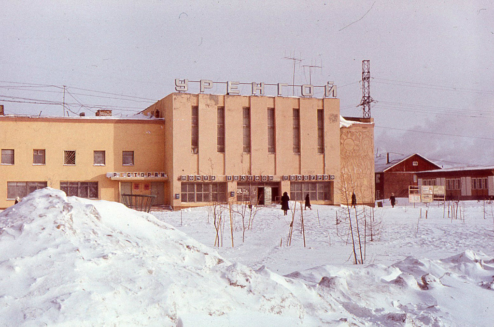
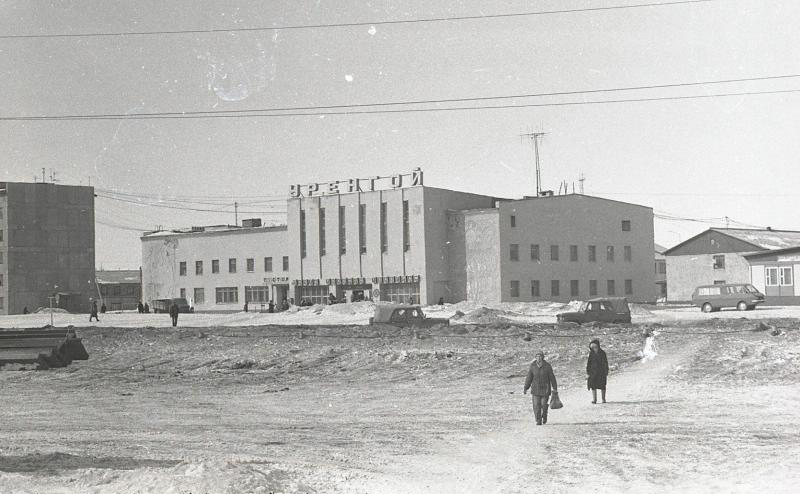
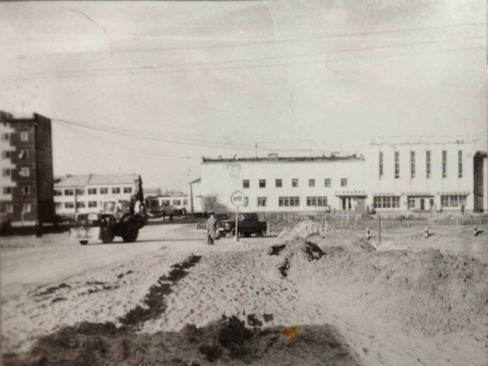
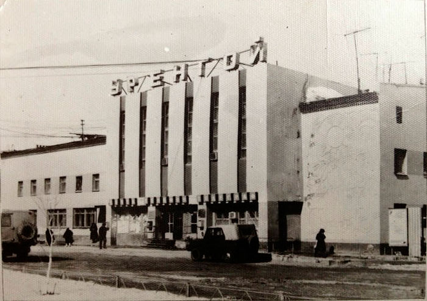
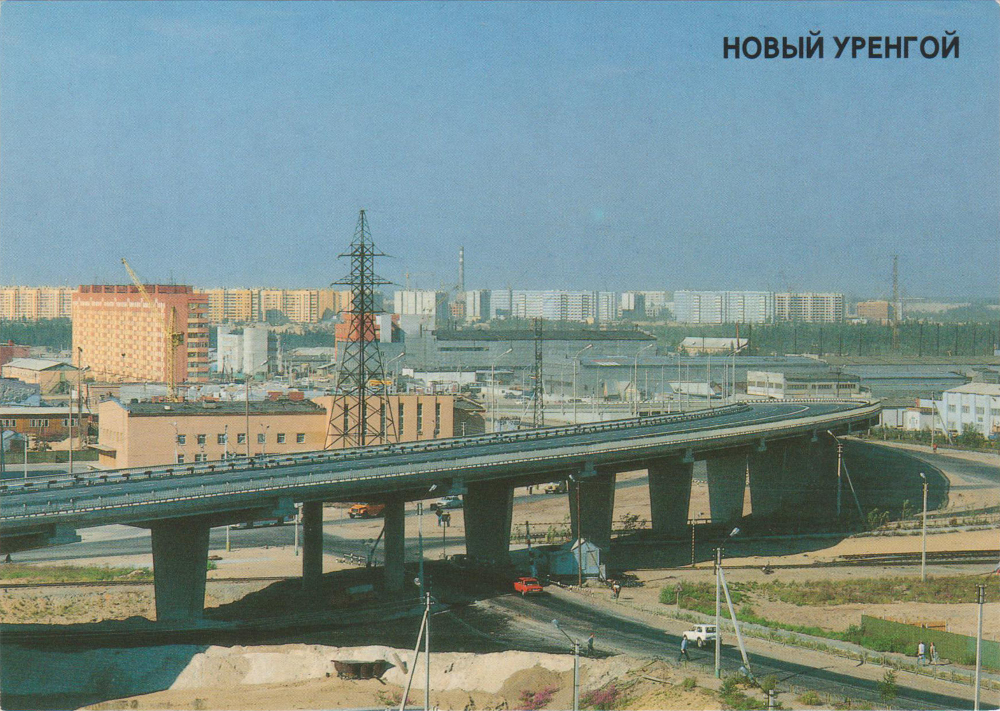
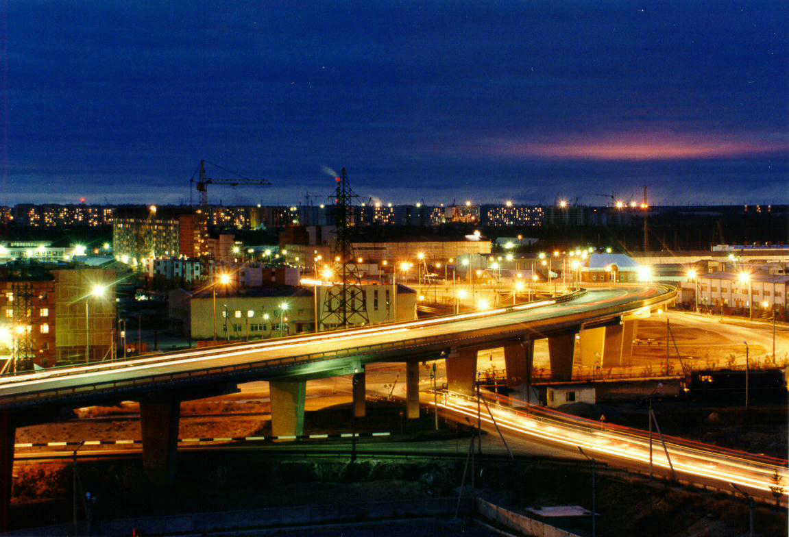
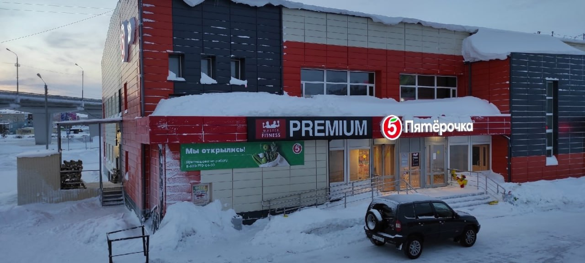

ул. Надымская 1
Сегодня, если спросить у жителей Нового Уренгоя, чего им не хватает в городе, зачастую можно получить ответ: «Некуда сходить в свободное от работы время». Можно смело сказать, что это одна из старейших проблем города. Потому что на отсутствие мест для досуга жаловались уже в 1979 году.
Только если сегодня у горожан есть выбор между молодёжными центрами, ТРК, домами культуры и кинотеатрами, то в 1979 году существовал только маленький клуб «Факел» и недавно открытая библиотека им. журнала «Смена». И это в населённом пункте численностью 8 580 человек. Этого было определённо мало.
Поэтому в 1979 году бригада Вячеслава Вахрушева (в составе Всесоюзного ударного комсомольского отряда имени XVIII съезда ВЛКСМ) приступила к строительству общественного центра «Уренгой». Сложно представить, с каким нетерпением новоуренгойцы ждали окончания строительства, ведь открывались новые возможности для организации досуга.
Общественный центр получился очень красивым. Особенно если учесть, что вокруг были одноэтажные и двухэтажные деревянные домики. Это было двухэтажное оштукатуренное кирпичное здание, выкрашенное в жёлтый цвет. Над правой частью здания установили вывеску «У Р Е Н Г О Й», представлявшую собой отдельно стоящие буквы. Также крайняя правая и крайняя левая стены были украшены сграффито.

На долгие годы общественный центр стал важной частью города. Прежде всего в 1980 году здесь открылся клуб «Ровесник» (в правой части второго этажа). На его базе проходили и дискотеки, и кинопоказы, и смотры, и отчетные концерты, и интересные встречи с участниками агитпоезда «Молодогвардеец» – поэтами, писателями, бардами.

Сегодня нас не удивить гастролями именитых звёзд по городам Ямала. А тогда все концерты организовывались силами горожан. Поэтому процветала художественная самодеятельность. Любители народного танца ходили в группу под руководством Н.В. Лунёва. А те, кто предпочитал современный эстрадный танец, могли записаться в группу Х.Х. Алиева. Для старшеклассников и рабочей молодёжи был открыт кружок художественного чтения. Также были организованы детский театральный коллектив и хоровой коллектив.
В 1982 году у новоуренгойских работников культурной сферы появилась славная традиция. Каждый год 13 января в уютном зале «Ровесника» они отмечали День культработника. И эта традиция просуществовала более 15 лет. Но самое забавное, что в официальном календаре такого праздника не было. А у работников культурной сферы Нового Уренгоя был.

У «Ровесника» помимо зала для хореографии был еще большой и красивый зрительный зал. А вот ЗАГС находился в маленьком помещении БАМовского дома №4 по ул. им. Журнала «Смена». Поэтому торжественную регистрацию старались провести в киноконцертном зале «Ровесника». К счастью, ЗАГС и клуб находились рядом.
После регистрации брака молодожёны вместе с гостями могли пойти отметить свадьбу в ресторан, который также располагался в «Уренгое» (в левой части второго этажа).
Но ресторан был не единственным местом в общественном центре, где можно было вкусно покушать. В левой части первого этажа разместилась кафе-кулинария, где продавались мясные полуфабрикаты, молочная и хлебобулочной продукция, а также соки, овощи и фрукты. Большим спросом у горожан пользовались сдобное тесто и свежая выпечка.

Однако не только для досуга был нужен общественный центр. Здесь располагались организации, оказывающие вполне утилитарные услуги. Среди них почта и телеграф, техническая библиотека «Уренгойгазпрома» и сапожных дел мастер. Кстати, почтовое отделение просуществовало на этом месте почти 40 лет, вплоть до 2019 года.
А обращали ли вы внимание, какая большая площадь перед «Уренгоем»? И это не просто так. Ведь каждое утро здесь собирались рабочие в ожидании «вахтовок». А в праздничные дни площадь использовалась для массовых гуляний.
Однако, шло время, рос Новый Уренгой. В городе появлялись новые клубы и дома культуры, кафе и рестораны. И «Уренгой» постепенно из общественного места превратился в деловой центр. В начале 2000-х годов были закрыты клуб «Ровесник», кафетерий и ресторан. В 2013 году левую половину здания занял филиал ООО «Газпром Информ». А в 2019 году была выкуплена правая часть здания.

Будущее этого легендарного здания пока остаётся неясным. Но несмотря на все изменения, оно остается ярким архитектурной решением и отличительной чертой нашего города (наравне с виадуком и стелой на въезде).

В конце 2021 года новый собственник провел ремонт правой части здания, обшив его сайдингом. А центральный вход перенесли туда, где раньше был вход в библиотеку (позади здания). Тем самым был испорчен открыточный вид Нового Уренгоя, что вызвало закономерное недоумение у горожан. Ситуацию даже освещали в СМИ
После публикации в СМИ собственник здания привел бывший центральный вход в порядок. Однако так и оставил его «запасным». В декабре 2021 года на первом этаже в правой части здания открылся продуктовый магазин «Пятёрочка». А 18 января 2022 года на втором этаже (на месте клуба «Ровесник») был открыт фитнес-клуб «Master Fitness».

{kind=link}
{kind=link}
{kind=link}
{kind=link}
{kind=link}
{kind=link}
{kind=link}
{kind=link}
{kind=link}
{kind=link}
{kind=link}